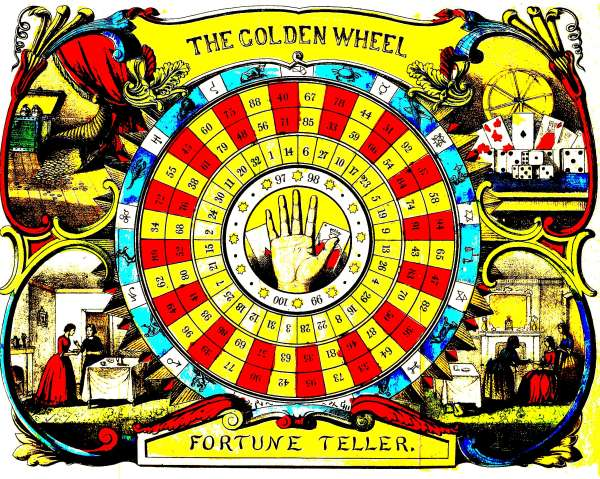

|
Will I ever have enough money?
If you’ve lain awake asking that, you’re not the first.
In 1862, a book in New York promised to tell you. It was called The Golden Wheel Dream-Book and Fortune-Teller. Its author called himself a “Professor of Astrology.”

The Golden Wheel, from Fontaine’s fortune book, New York, 1862.
Scan: Project Gutenberg (public domain)
It came with a big coloured wheel that folded out. A hundred numbers in rings, and a hand in the middle.
The book lists what the wheel could answer. First on the list was love: would you win “the person you desire”?
Eighth on the list was this:
“Whether a person shall be rich or poor?”
Here’s how it worked. You laid the wheel face down, so you couldn’t see the numbers. You pricked into it. Then you looked up the number you’d hit.
The book adds a tip. It’s “better to do it with their eyes shut.”
Your whole money future. Eyes shut.
There were 100 answers, one list for every question. About half of them were about love: a lover, a partner, a wedding. Even the money answers kept bringing a husband along.
Number 1 said you’d “marry an homely person, but rich.” Homely meant plain.
Plain, but rich. Some weeks, I can see the appeal.
And number 95 said this:
“You will marry poor, but in the end be rich.”
I like that one. It’s hopeful. And the old book got one thing right. For a lot of us, money and love are tied up together. Who we married. Who left. Who we still look after.
Here’s my honest take on that wheel.
It gave the same 100 answers to everyone who pricked it. The widow and the new bride. The woman with savings and the woman with none. Same wheel, same list.
It never asked what happened to you. What you were taught about money as a girl. What you’ve built since, on your own.
And it only had two places to put your money: in a lucky number, or in a man.
Your money has its own story. It’s not just luck, and it’s not just who you married. And a story like that can be read.
The wheel wanted your eyes shut. I’d like us to look with them open.
I won’t tell you you’ll be rich. That was the wheel’s line, never mine. I’ll look at what’s really going on with your money, and I’ll tell you the truth about it.
So ask me your money question, in your own words. What keeps you up. What you’re scared of. What you’re hoping for. It doesn’t have to be tidy.
Evelyn, I’d like to look at my money with my eyes open →
Money can feel like something that just happens to you.
A lot of us were raised to leave it to luck, or to a husband. Then life went a different way. A divorce. A loss. Years of putting everyone else first.
That doesn’t make you bad with money. It means nobody ever sat down and looked at it with you.
New to chatting with me? Your first 3 minutes are free.
Money worries get heavier the longer we don’t look at them. Tonight is a good night to look.
Ask Evelyn my money question →
— Evelyn
P.S. “You will marry poor, but in the end be rich.” The wheel gave those words to anyone who pricked number 95. Your story was never on that wheel. Bring it to me, eyes open. Start here.
|